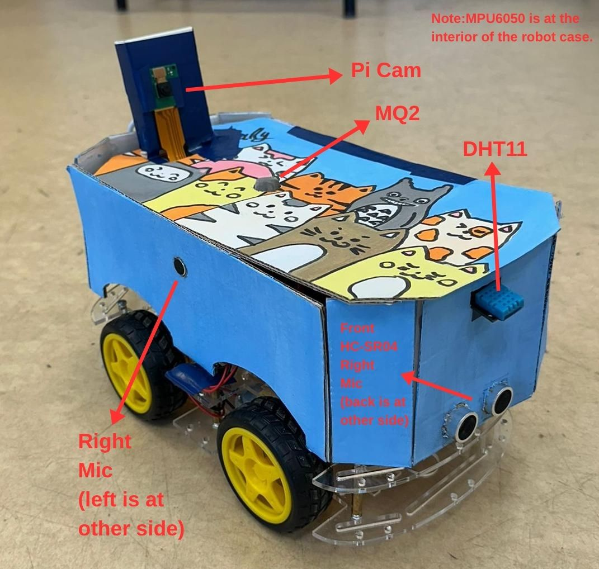
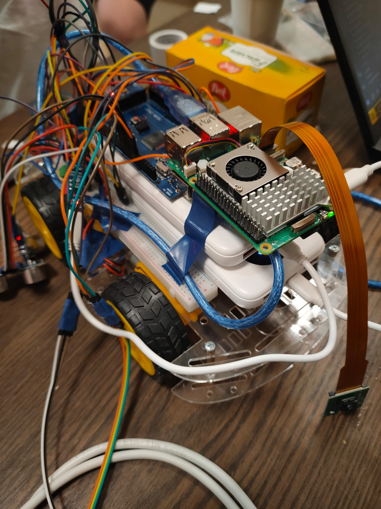

An autonomous Edge-AI reconnaissance robot that enters disaster zones before firefighters. It maps the
area, locates victims via Tri-Modal Sensor Fusion (Vision + Acoustics + Environment), classifies victim
severity, and provides initial support — all on-device with zero cloud dependency.
Physical implementation of the Tri-Modal Fire & Rescue Robot.

Waiting for robot_overview.jpg...
Exterior Overview
Top-diagonal view of the chassis. Add your sensor
annotations here.

Waiting for inside.jpeg...
Internal Hardware
Cover removed, showing Raspberry Pi 5, Arduino
Mega, and power distribution.
🧠 Decision Engine — AutonomyController
The robot's brain lives in autonomy_controller.py on the Raspberry Pi 5. It implements a
priority-based decision tree that fuses data from all three sensing modalities:
Priority 1 — Obstacle Avoidance: If the front
ultrasonic sensor reads ≤18 cm, the robot immediately turns (alternating LEFT/RIGHT) to avoid collision. Priority 2 — Victim Approach: If the YOLO + CNN pipeline detects a
TRAPPED or LYING victim, the controller steers the robot toward the target by comparing the bounding box
center against the frame center (±70px tolerance), and stops when distance ≤60 cm. Priority 3 — Patrol: When no obstacle or victim is detected, the robot
moves FORWARD in autonomous patrol mode, sweeping the environment.
Each decision cycle runs at 4 Hz (250ms), merging UART telemetry
from the Arduino Mega with real-time vision output. The decision is sent back to the Mega as a simple command
(FORWARD\n, LEFT\n, etc.), which executes the movement for 2 seconds before
auto-stopping.
CORE CAPABILITIES
System Architecture Highlights
A multi-module cyber-physical system combining edge AI, acoustic localization, and
real-time telemetry.
Two-Stage Edge AI Vision
YOLOv8 detects humans in real-time on the Pi Camera V3. A custom CNN (ONNX) then classifies victim
severity: TRAPPED, LYING, or STANDING — entirely on-device with no cloud.
Acoustic Source Localization
Dual MAX4466 microphone array with software IIR filtering detects distress calls and computes bearing
angles to guide the robot toward sound sources in smoke-filled environments.
Arduino Mega Sensor Hub
The Arduino Mega 2560 drives 4WD DC motors via L298N, reads HC-SR04 ultrasonics, MPU6050 IMU, DHT11
temperature, MQ-2 smoke, and streams JSON telemetry at 300ms intervals.
Unity Digital Twin + Web Dashboard
A real-time Unity 3D operator interface mirrors the robot's state, drops color-coded victim pins, and
supports Push-to-Talk. Flask/WebSocket backend bridges all modules.
SYSTEM FLOW
How It Works
[Unity Digital Twin] ⟵──── WebSocket (JSON Telemetry + Video) ────⟶ [Web Dashboard (Flask)]
│ │
(PTT Audio) (Python Function Calls)
│ │
▼ ▼
[Vision Pipeline] ⟵──── Pause/Resume Interrupts ────⟶ [AutonomyController 🧠]
(YOLOv8 + CNN) (Decision Engine)
│ │
(Pi Camera V3) (UART USB Commands)
│ │
└─────────────────────── Raspberry Pi 5 ─────────────────────┘
│
USB Serial (115200 baud)
│
▼
[Arduino Mega 2560]
┌──────────┼──────────┐
(PWM) (ADC) (I2C)
L298N Motors Mics/MQ2 MPU6050
HC-SR04 ×2 DHT11